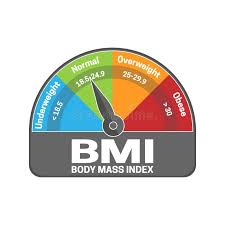

STUDENT INFORMATION DETAILS
A.M.M FATHIR
Body Mass Index (BMI) is a person’s weight in kilograms divided by the square of height in meters. A high BMI can indicate high body fatness. BMI screens for weight categories that may lead to health problems, but it does not diagnose the body fatness or health of an individual.
The BMI was introduced in the early 19th century by a Belgian named Lambert Adolphe Jacques Quetelet. He was a mathematician, not a physician. He produced the formula to give a quick and easy way to measure the degree of obesity of the general population to assist the government in allocating resources